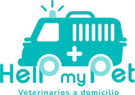
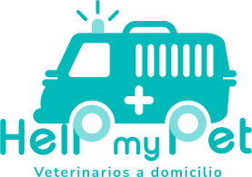

Nuestra Veterinaria

1La mejor veterinaria en Manizales
Hospital veterinario Help My Pet, somos un hospital veterinario con todos los servicios en Manizales y los ofrecemos para ti y tu mascota.Somos un centro multidisciplinar actualizado, con una gran implicación médica, formación actualizada y equipos de última generación. Si buscas un centro donde puedas realizar todas las pruebas medicas necesarias para tu mascota en el momento, éste es tu hospital. Además, la preocupación real por el animal de compañía, empatizando con su propietario, realizando todas las pruebas que pueda necesitar en un mismo acto, reduciendo el estrés y con un manejo cuidadoso y delicado, son nuestras principales caracteristicas.
2Los mejores veterinarios
Contamos con profesionales acreditados por escuelas y asociaciones nacionales en especialidades concretas, es así como puedes solicitar cita con especialistas certificados en medicina felina, traumatología, endoscopia y cirugía laparoscopica. Nuestro equipo esta lleno de porfesionales cariñosos, respetuosos y enamorados de los animales, lo que garantiza un excelente trato para su mascota.
Nuestros servicios


Tarjeta VIP para sus mascotas

Clinica veterinaria 24 horas

Farmacia veterinaria

Esterelización y vacunación

Peluquería para su mascota

Consulta medico veterinaria

Publicacion de articulos profesionales

Categorización de autores
Que dicen nuestros lectores

Nidia Salavarrieta
Desde hace algún tiempo soy lectora de su revista, su contenido es muy claro y preciso, sus artículos han sido de gran utilidad para aumentar mis conocimientos en cultura general, literatura, salud, y entretenimiento; espero continúen con ese sentido de información tan serio y claro. Gracias

Pedro Santorino
He sido un seguidor de su ruiré siendo uno más de sus lectores.
Nuestros autores

Envio de articulos
Si está interesado en publicar algún artículo con nosotros, lo invitamos a inscribirse en nuestra plataforma, luego anexe el manuscrito, que será revisado, analizado y clasificado; al momento de pasar por estos filtros nos comunicaremos usted para efectos de publicación.

Seguimiento de articulos
El autor podrá hacer seguimiento de sus artículos, ya sean con el grupo revisor, el consejo de editores, o el equipo de personal encargado de las publicaciones, para estar en total acuerdo con con lo que será publicado.

Seguimiento de las publicaciones
Desde el primer momento de la publicación del artículo, el autor podrá estar al tanto de todo aquello que genere o tenga que ver con su manuscrito.

Quien lee tus articulos
Acá podrás ver cuántas personas han leído un artículo, y con algunas opiniones podrás ver el impacto que ha generado la lectura, y algunas recomendaciones para manuscritos futuros.

Que opinan de tus articulos
Podrás ver las opiniones de los lectores a cada uno de los artículos publicados, sus conceptos, acuerdos o desacuerdos, sugerencias, de igual manera podrás interactuar con ellos, si es necesario.